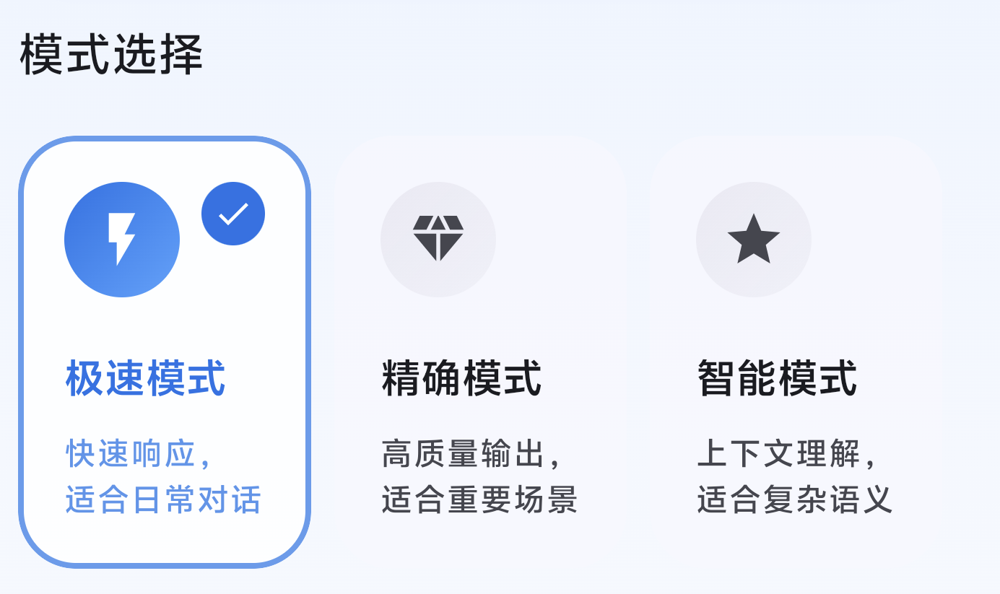

打破语言壁垒，让沟通无界
EyeOpener — 实时语音翻译字幕
基于实时语音识别技术，提供多引擎翻译与悬浮字幕显示。支持 30+ 种语言离线识别、70+ 种语言翻译对，无论是视频通话、在线会议还是看外语视频，都能让你轻松跨越语言障碍。
核心功能
三大核心模块，打造完整的实时翻译体验
实时语音识别
采用高性能离线 ASR 引擎，支持 30+ 种语言离线识别，真正的流式识别，延迟低至 100-300ms。无需联网即可完成语音转文字，保护你的隐私安全。
- 30+ 种语言离线识别
- 70+ 种语言翻译对
- 离线可用，隐私安全
悬浮字幕系统
可拖拽、可缩放的悬浮窗 Overlay，双语字幕同步显示，支持透明度调节。在任何应用上层显示翻译结果，不遮挡重要内容。
- 可拖拽、可缩放
- 双语字幕显示
- 透明度自由调节
智能翻译引擎
三种翻译模式灵活切换：极速翻译、高质量翻译、AI 智能翻译。根据场景需求选择最适合的翻译策略。
- 极速翻译，低延迟
- 精确翻译，支持离线
- AI 智能翻译，上下文理解

三种翻译引擎
根据不同场景灵活选择，平衡速度与质量
| 模式 | 引擎 | 特性 | 适用场景 |
|---|---|---|---|
| 极速 | 设备端引擎 | 速度快，低延迟，设备端运行 | 实时对话、日常交流 |
| 精确 | 本地推理 | 翻译精准，支持多语言对，可离线 | 正式会议、商务沟通 |
| AI 智能模式 | 大模型 API | 上下文理解，意译润色，具体支持以接入的大模型为准 | 复杂语境、专业领域 |

悬浮字幕，自由掌控
EyeOpener 的悬浮窗 Overlay 系统让你在任何应用上层实时查看翻译字幕。支持自由拖拽定位、窗口缩放、说话人颜色标记，并会记住你上次的位置偏好。
自由拖拽
悬浮窗任意位置移动
缩放调节
窗口大小自由调整
说话人颜色
不同说话人标记颜色
位置记忆
记住你的偏好位置
用户评论
欢迎分享你的使用体验和建议